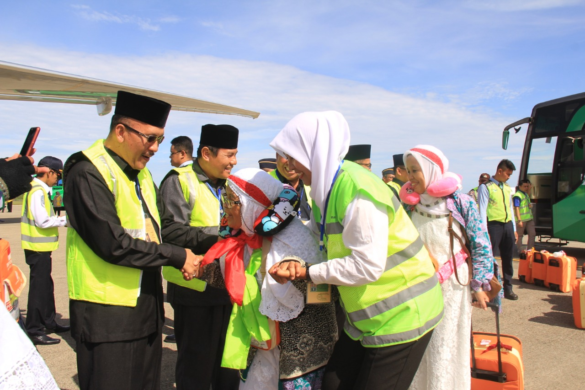

Lima Manfaat Program Manasik Sepanjang Tahun
Padang (PHU) --- Kakanwil Kementerian Agama Provinsi Sumatera Barat Hendri mengatakan 5 manfaat dari Program Manasik Sepanjang Tahun, yaitu; pertama, jemaah haji menjadi mandiri karena dapat meningkatkan kemampuan dan kompetensi jamaah haji ...
Baca Selengkapnya